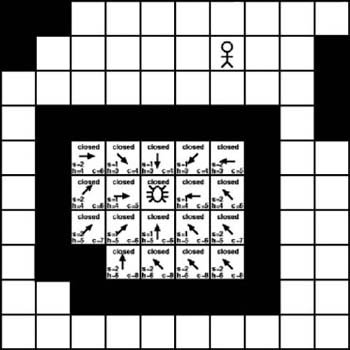

7.4 Finding a Dead End
It's always possible that no valid path exists between any two given points, so how do we know when we have reached a dead end? The simple way to determine if we've reached a dead end is to monitor the open list. If we reach the point where no members are in the open list to examine, we've reached a dead end. Figure 7-18 shows such a scenario.

As Figure 7-18 shows, the A* algorithm has branched out to every possible adjacent tile. Each one has been examined and moved to the closed list. Eventually, the point was reached where every tile on the open list was examined and no new tiles were available to add. At that point we can conclude that we've reached a dead end and that it simply isn't possible to build a path from the starting point to the desired destination.
|